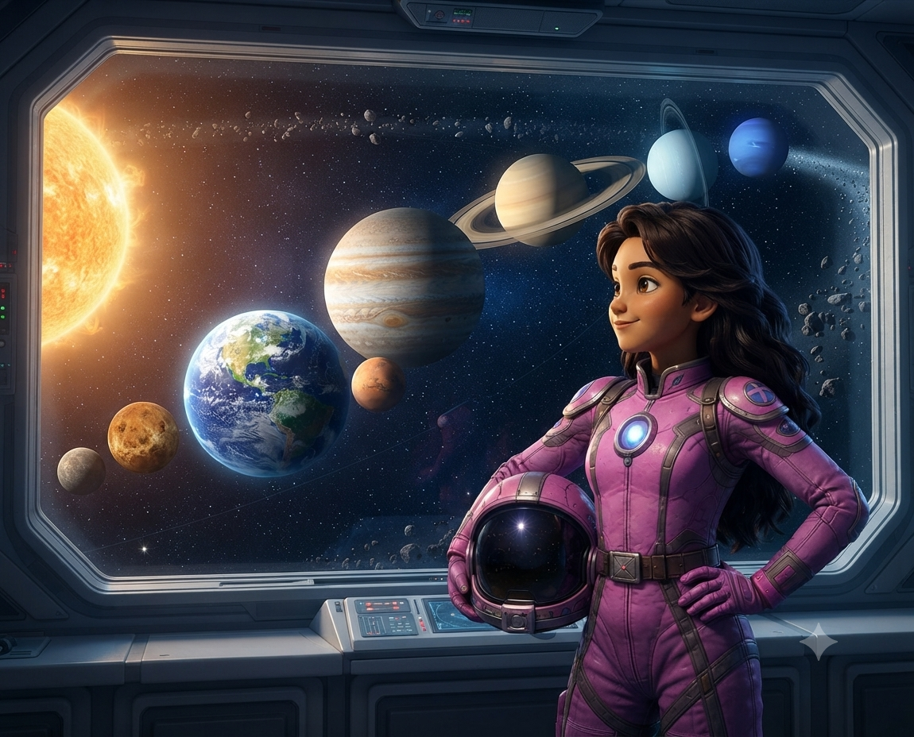

Mission: Enceladus
Der Weltraum ist riesig.
Zwischen Milliarden von Sternen und Planeten gibt es einen geheimnisvollen Ort, der die Neugier der Wissenschaftler weckt: Enceladus, einen kleinen Mond, der von einer dicken Eisschicht bedeckt ist und den riesigen Saturn umkreist.
Dort schießen Wasserfontänen aus dem Inneren des Mondes ins All. Sie sind ein Hinweis darauf, dass sich unter dem Eis ein Ozean verbergen könnte. Gibt es vielleicht etwas, das in dieser gefrorenen Welt lebt? Oder vielleicht eine alte, vergessene Technologie?
Um die Antwort darauf zu finden, wurde eine neue Mission vorbereitet.
Die mutige Kapitänin Kapita erhielt eine wichtige Aufgabe: Sie soll zum Saturn reisen und eine moderne wissenschaftliche Sonde installieren, die den Forschern auf der Erde dabei helfen wird, Enceladus viele Jahre lang zu erforschen.
Doch schon bald wird sie feststellen, dass diese Mission viel gefährlicher ist, als sie gedacht hat ...